Activity
生命周期
onCreate() -> onStart() -> onResume() ->
onPause() -> onStop() -> onDestroy()
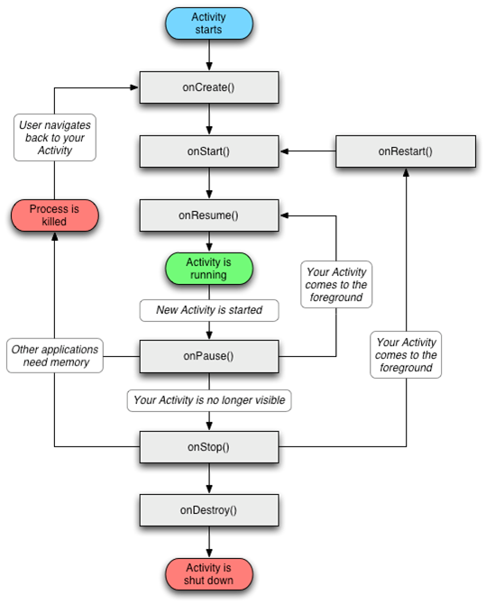
- 启动Activity：系统先调用onCreate(),然后调用onStart()，最后调用onResume()方法，Activity进入运行状态。
- 当Activity被其他Activity覆盖(DialogActivity)或者锁屏：系统调用onPause()方法，暂停当前Activity的执行。
- 当前Activity由被覆盖状态回到前台或者解锁屏：系统调用onResume()方法，再次进入运行状态。
- 当前Activity转到新的Activity界面或按Home键回到主页，退居后台：系统先调用onPause()方法，然后调用onStop()方法，进入停滞状态。
- 用户后退回到此Activity：系统会先调用onRestart()方法，然后调用onStart()方法，最后调用onResume()方法，再次进入运行状态。
- 当前Activity处于覆盖状态或者后台不可见状态，即第2步和第4步，当前系统内存不足时，杀死当前Activity，当用户回退当前Activity：再次调用onCreate()方法、onStart()方法、onResume()方法，进入运行状态。
- 当用户退出当前Activity：系统先调用onPause()方法，然后调用onStop()方法，最后调用onDestroy()方法，结束当前Activity。
- onRestart()：表示当前Activity正在重新启动，一般情况下，当前Activity从不可见状态重新变成可见状态，onRestart()方法就会被调用。这种情形一般是用户行为导致的，比如用户按Home键切换到桌面然后重新打开APP或者从新Activity按back键
- onStart()：Activity可见了，但是还没出现在前台，还无法和用户交互。
- onPause()：表示Activity正在停止，此时可以做一些存储数据、停止动画等工作，不能太耗时，因为这会影响新Activity的显示。onPause()必须先执行完，新的Activity的onResume()才会执行。
- 从Activity是否可见来说，onStart()和onStop()是配对的，从Activity是否在前台来说，onResume()和onPause()是配对的。
- 旧Activity先onPause()，然后新Activity再启动。
注意：当Activity弹出dialog对话框的时候，Activity不会回调onPause()。而当Activity启动dialog风格的Activity时候，此Activity会回调onPause()函数
异常情况下的生命周期
资源相关的系统配置发生改变导致Activity被杀死并重新创建
如当前Activity处于竖屏状态，如果突然旋转屏幕，由于系统配置发生了改变，在默认情况下，Activity会被销毁并且重新创建，也可以组织系统重新创建我们的Activity。
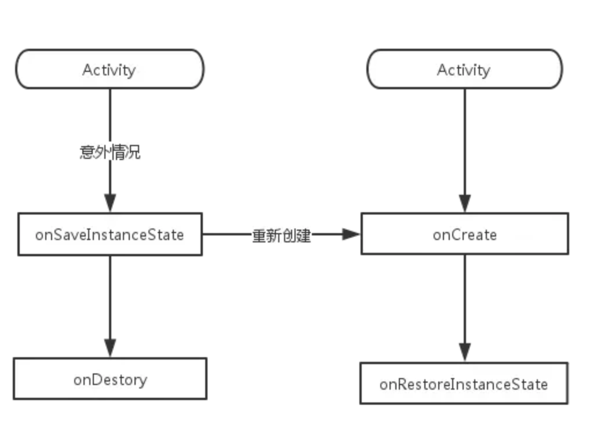
系统配置发生改变之后，Activity会销毁，其onPause()、onStop()、onDestroy()均会被调用，由于Activity是在异常状况下终止的，系统会调用onSaveInstance()来保存当前Activity状态，这个方法的调用时机是在onStop()之前，与onPause()没有既定的时序关系，当Activity重新创建后，系统会调用onRestoreInstanceState()，并且把Activity销毁时onSaveInstance()方法保存的Bundle对象作为参数同时传递给onRestoreInstanceState()和onCreate()方法。onRestoreInstanceState()在onStart()后回调。
同时，在onSaveInstance()和onRestoreInstanceState()方法中，系统自动为我们做了一些恢复工作，如：文本框(EditeText)中用户输入的数据，ListView滚动的位置等，这些view相关的状态，系统都能够默认为我们恢复。查看view源码，和Activity一样，每个view都有onSaveInstance()和onRestoreInstanceState()方法。
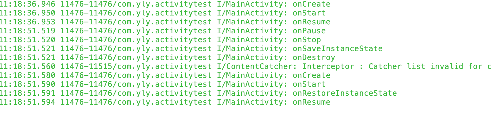
Android9测试onSaveInstance()在onStop()之后
资源内存不足导致低优先级的Activity被杀死
这里的情况与前面的数据存储与恢复是一致的。
Activity按照优先级从高到低可以分为如下3种：
- 前台Activity—-正在和用户交互的Activity，优先级最高。
- 可见但非前台Activity—-如Activity中弹出一个对话框，导致Activity可见但位于后台无法与用户直接交互。
- 后台Activity—-已经被暂停的Activity，如执行了onStop()，优先级最低。
防止重建Activity：Activity指定configChange属性不让系统重建Activity，android : configChanges = “orientation”
Activity的启动模式
standard模式
这种模式下，Activity默认会进入启动它的Activity所属的任务栈中。注意：在非Activity类型的Context（如ApplicationContext）并没有所谓的任务栈，所以不能通过ApplicationContext去启动standard模式的Activity
singleTop模式
栈顶复用模式。如果新Activity位于任务栈的栈顶的时候，Activity不会被重新创建，同时它的onNewIntent()方法会被回调。注意：这个Activity的onCreate()、OnStart()、onResume()不会被回调，因为他们并没有发生改变。
singleTask模式
栈内复用模式。只要Activity在一个栈中存在，那么多次启动此Activity不会被重新创建实例，系统会回调onNewIntent()。如ActivityA，系统首先会寻找是否存在A想要的任务栈，如果没有则创建一个新的任务栈，然后把ActivityA压入栈，如果存在任务栈，然后再看有没有ActivityA的实例，如果实例存在，那么就会把A调到栈顶并调用它的onNewIntent()方法，如果不存在，则把它压入栈。
singleInstance模式
单实例模式。这种模式的Activity只能单独的位于一个任务栈中，由于栈内复用特性，后续的请求均不会创建新的Activity实例。
注意：默认情况下，所有Activity所需的任务栈的名称为应用的包名，可以通过给Activity指定TaskAffinity属性来指定任务栈，这个属性值不能与包名相同，否则就没有意义
例子
众所周知当我们多次启动同一个Activity时，系统会创建多个实例，并把它们按照先进后出的原则一一放入任务栈中，当我们按back键时，就会有一个activity从任务栈顶移除，重复下去，直到任务栈为空，系统就会回收这个任务栈。但是这样以来，系统多次启动同一个Activity时就会重复创建多个实例，这种做法显然不合理，为了能够优化这个问题，Android提供四种启动模式来修改系统这一默认行为。
为了打印方便，定义一个基础Activity，在其onCreate方法和onNewIntent方法中打印出当前Activity的日志信息，主要包括所属的task，当前类的hashcode，以及taskAffinity的值。之后我们进行测试的Activity都直接继承该Activity
public class BaseActivity extends AppCompatActivity {
@Override
protected void onCreate(@Nullable Bundle savedInstanceState) {
super.onCreate(savedInstanceState);
Log.i("yly", "*****onCreate()方法******");
Log.i("yly", "onCreate：" + getClass().getSimpleName() + " TaskId: " + getTaskId() + " hasCode:" + this.hashCode());
dumpTaskAffinity();
}
@Override
protected void onNewIntent(Intent intent) {
super.onNewIntent(intent);
Log.i("yly", "*****onNewIntent()方法*****");
Log.i("yly", "onNewIntent：" + getClass().getSimpleName() + " TaskId: " + getTaskId() + " hasCode:" + this.hashCode());
dumpTaskAffinity();
}
protected void dumpTaskAffinity(){
try {
ActivityInfo info = this.getPackageManager()
.getActivityInfo(getComponentName(), PackageManager.GET_META_DATA);
Log.i("yly", "taskAffinity:"+info.taskAffinity);
} catch (PackageManager.NameNotFoundException e) {
e.printStackTrace();
}
}
}
standard-默认模式
这个模式是默认的启动模式，即标准模式，在不指定启动模式的前提下，系统默认使用该模式启动Activity，每次启动一个Activity都会重写创建一个新的实例，不管这个实例存不存在，这种模式下，谁启动了该模式的Activity，该Activity就属于启动它的Activity的任务栈中。这个Activity它的onCreate()，onStart()，onResume()方法都会被调用。
public class ActivityStandard extends BaseActivity {
private Button mButton;
@Override
protected void onCreate(@Nullable Bundle savedInstanceState) {
super.onCreate(savedInstanceState);
setContentView(R.layout.activity_standard);
mButton = findViewById(R.id.button);
mButton.setOnClickListener(new View.OnClickListener() {
@Override
public void onClick(View view) {
Intent intent = new Intent(ActivityStandard.this,ActivityStandard.class);
startActivity(intent);
}
});
}
}
点击四次按钮后：
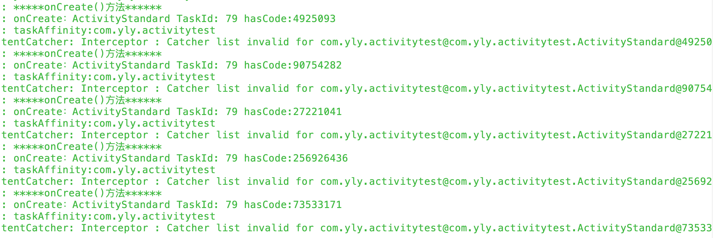
可以看到日志输出了四次StandardActivity的日志，并且所属的任务栈的id都是79，这也验证了谁启动了该模式的Activity，该Activity就属于启动它的Activity的任务栈中这句话。并且每一个Activity的hashcode都是不一样的，说明他们是不同的实例，即“每次启动一个Activity都会重写创建一个新的实例”。
singleTop-栈顶复用模式
这个模式下，如果新的activity已经位于栈顶，那么这个Activity不会被重写创建，同时它的onNewIntent方法会被调用，通过此方法的参数我们可以去除当前请求的信息。如果栈顶不存在该Activity的实例，则情况与standard模式相同。需要注意的是这个Activity它的onCreate()，onStart()方法不会被调用，因为它并没有发生改变。
配置：
<activity android:name=".ActivitySingleTop" android:launchMode="singleTop"/>
ActivitySingleTop
public class ActivitySingleTop extends BaseActivity {
private Button mButton1,mButton2;
@Override
protected void onCreate(@Nullable Bundle savedInstanceState) {
super.onCreate(savedInstanceState);
setContentView(R.layout.activity_singletop);
mButton1 = findViewById(R.id.button1);
mButton2 = findViewById(R.id.button2);
mButton1.setOnClickListener(new View.OnClickListener() {
@Override
public void onClick(View view) {
Intent intent = new Intent(ActivitySingleTop.this, ActivitySingleTop.class);
startActivity(intent);
}
});
mButton2.setOnClickListener(new View.OnClickListener() {
@Override
public void onClick(View view) {
Intent intent = new Intent(ActivitySingleTop.this, OtherTopActivity.class);
startActivity(intent);
}
});
}
}
OtherTopActivity
public class OtherTopActivity extends BaseActivity {
private Button mButton;
@Override
protected void onCreate(@Nullable Bundle savedInstanceState) {
super.onCreate(savedInstanceState);
setContentView(R.layout.activity_othertop);
mButton = findViewById(R.id.button3);
mButton.setOnClickListener(new View.OnClickListener() {
@Override
public void onClick(View view) {
Intent intent = new Intent(OtherTopActivity.this, ActivitySingleTop.class);
startActivity(intent);
}
});
}
}
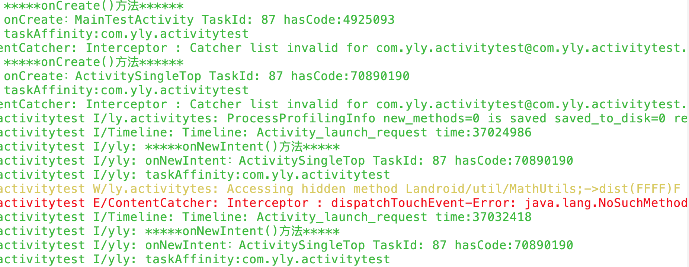
我们看到，除了第一次进入ActivitySingleTop这个Activity时，输出的是onCreate方法中的日志，后续的都是调用了onNewIntent方法，并没有调用onCreate方法，并且日志的hashcode都是一样的，说明栈中只有一个实例。这是因为第一次进入的时候，栈中没有该实例，则创建，后续发现栈顶有这个实例，则直接复用，并且调用onNewIntent方法。
那么假设栈中有该实例，但是该实例不在栈顶情况又如何呢？我们先从MainTestActivity中进入到ActivitySingleTop，然后再跳转到OtherTopActivity中，再从OtherTopActivity中跳回ActivitySingleTop，再从ActivitySingleTop跳到ActivitySingleTop中，看看整个过程的日志。
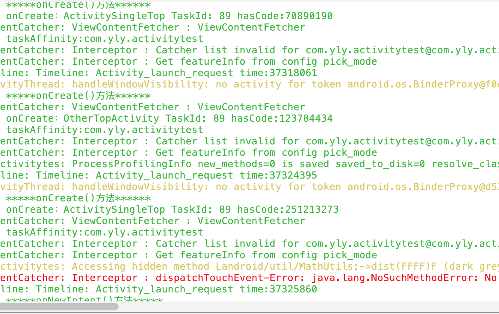
我们看到从MainTestActivity进入到ActivitySingleTop时，新建了一个ActivitySingleTop对象，并且task id与MainTestActivity是一样的，然后从ActivitySingleTop跳到OtherTopActivity时，新建了一个OtherTopActivity，此时task中存在三个Activity，从栈底到栈顶依次是MainTestActivity，ActivitySingleTop，OtherTopActivity，此时如果再跳到ActivitySingleTop，即使栈中已经有ActivitySingleTop实例了，但是依然会创建一个新的ActivitySingleTop实例，这一点从上面的日志的hashCode可以看出，此时栈顶是ActivitySingleTop，如果再跳到ActivitySingleTop，就会复用栈顶的ActivitySingleTop，即会调用ActivitySingleTop的onNewIntent方法。这就是上述日志的全过程。
singleTop模式分3种情况
- 当前栈中已有该Activity的实例并且该实例位于栈顶时，不会新建实例，而是复用栈顶的实例，并且会将Intent对象传入，回调onNewIntent方法
- 当前栈中已有该Activity的实例但是该实例不在栈顶时，其行为和standard启动模式一样，依然会创建一个新的实例
- 当前栈中不存在该Activity的实例时，其行为同standard启动模式
standard和singleTop启动模式都是在原任务栈中新建Activity实例，不会启动新的Task，即使你指定了taskAffinity属性。
那么什么是taskAffinity属性呢，可以简单的理解为任务相关性。
- 这个参数标识了一个Activity所需任务栈的名字，默认情况下，所有Activity所需的任务栈的名字为应用的包名
- 我们可以单独指定每一个Activity的taskAffinity属性覆盖默认值
- 一个任务的affinity决定于这个任务的根activity（root activity）的taskAffinity
- 在概念上，具有相同的affinity的activity（即设置了相同taskAffinity属性的activity）属于同一个任务
- 为一个activity的taskAffinity设置一个空字符串，表明这个activity不属于任何task
指定方式如下：
<activity android:name=".ActivitySingleTop" android:launchMode="singleTop" android:taskAffinity="com.castiel.demo.singletop"/>
<activity android:name=".ActivityStandard" android:launchMode="standard" android:taskAffinity="com.castiel.demo.standard"/>
singleTask-栈内复用模式
这个模式十分复杂，有各式各样的组合。在这个模式下，如果栈中存在这个Activity的实例就会复用这个Activity，不管它是否位于栈顶，复用时，会将它上面的Activity全部出栈，并且会回调该实例的onNewIntent方法。其实这个过程还存在一个任务栈的匹配，因为这个模式启动时，会在自己需要的任务栈中寻找实例，这个任务栈就是通过taskAffinity属性指定。如果这个任务栈不存在，则会创建这个任务栈。
配置形式：
<activity android:name=".ActivitySingleTask" android:launchMode="singleTask"/>
ActivitySingleTask
public class ActivitySingleTask extends BaseActivity {
private Button btn1,btn2;
@Override
protected void onCreate(@Nullable Bundle savedInstanceState) {
super.onCreate(savedInstanceState);
setContentView(R.layout.activity_singletask);
btn1 = findViewById(R.id.btn1);
btn2 = findViewById(R.id.btn2);
btn1.setOnClickListener(new View.OnClickListener() {
@Override
public void onClick(View view) {
Intent intent = new Intent(ActivitySingleTask.this, ActivitySingleTask.class);
startActivity(intent);
}
});
btn2.setOnClickListener(new View.OnClickListener() {
@Override
public void onClick(View view) {
Intent intent = new Intent(ActivitySingleTask.this, OtherTaskActivity.class);
startActivity(intent);
}
});
}
}
OtherTaskActivity
public class OtherTaskActivity extends BaseActivity {
private Button mButton;
@Override
protected void onCreate(@Nullable Bundle savedInstanceState) {
super.onCreate(savedInstanceState);
setContentView(R.layout.activity_othertask);
mButton = findViewById(R.id.button4);
mButton.setOnClickListener(new View.OnClickListener() {
@Override
public void onClick(View view) {
Intent intent = new Intent(OtherTaskActivity.this, ActivitySingleTask.class);
startActivity(intent);
}
});
}
}
现在我们先不指定任何taskAffinity属性，对它做类似singleTop的操作，即从入口MainTestActivity进入SingleTaskActivity，然后跳到OtherActivity，再跳回到SingleTaskActivity。看看整个过程的日志。
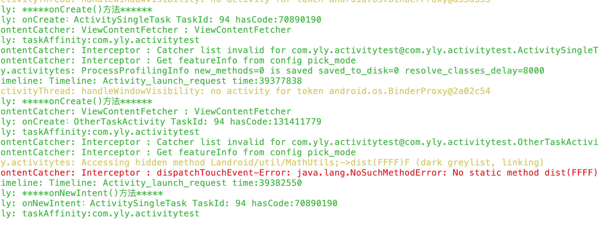
当我们从MainTestActivity进入到SingleTaskActivity，再进入到OtherActivity后，此时栈中有3个Activity实例，并且SingleTaskActivity不在栈顶，而在OtherActivity跳到SingleTaskActivity时，并没有创建一个新的SingleTaskActivity，而是复用了该实例，并且回调了onNewIntent方法。并且原来的OtherActivity出栈了，具体见下面的信息，使用命令adb shell dumpsys activity activities可进行查看
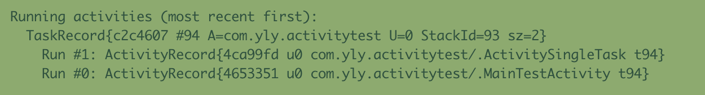
可以看到当前栈中只有两个Activity，即原来栈中位于SingleTaskActivity 之上的Activity都出栈了。
我们看到使用singleTask启动模式启动一个Activity，它还是在原来的task中启动。其实是这样的，我们并没有指定taskAffinity属性，这说明和默认值一样，也就是包名，当MainTestActivity启动时创建的Task的名字就是包名，因为MainTestActivity也没有指定taskAffinity，而当我们启动SingleTaskActivity ，首先会寻找需要的任务栈是否存在，也就是taskAffinity指定的值，这里就是包名，发现存在，就不再创建新的task，而是直接使用。当该task中存在该Activity实例时就会复用该实例，这就是栈内复用模式。
这时候，如果我们指定SingleTaskActivity 的taskAffinity值。
<activity android:name=".ActivitySingleTask" android:launchMode="singleTask"
android:taskAffinity="com.yly.demo.singletask"/>
还是之前的操作。但是日志就会变得不一样。
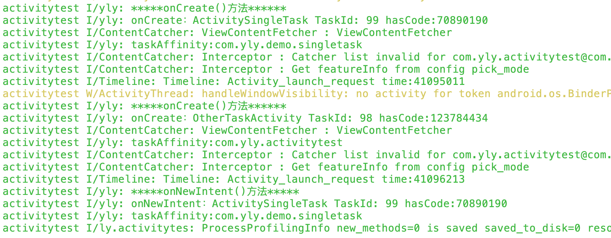
我们看到SingleTaskActivity所属的任务栈的TaskId发生了变换，也就是说开启了一个新的Task，并且之后的OtherActivity也运行在了该Task上。
日志OtherActivity并未在新task上
打印出信息也证明了存在两个不同的Task
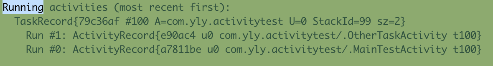
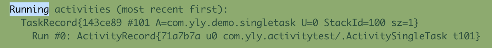
如果我们指定MainTestActivity的taskAffinity属性和SingleTaskActivity一样，又会出现什么情况呢。
没错，就是和他们什么都不指定是一样的。
这时候，就有了下面的结论
singleTask启动模式启动Activity时，首先会根据taskAffinity去寻找当前是否存在一个对应名字的任务栈
- 如果不存在，则会创建一个新的Task，并创建新的Activity实例入栈到新创建的Task中去
- 如果存在，则得到该任务栈，查找该任务栈中是否存在该Activity实例。如果存在实例，则将它上面的Activity实例都出栈，然后回调启动的Activity实例的onNewIntent方法。如果不存在该实例，则新建Activity，并入栈。
此外，我们可以将两个不同App中的Activity设置为相同的taskAffinity，这样虽然在不同的应用中，但是Activity会被分配到同一个Task中去。
我们再创建另外一个应用，指定它的taskAffinity和之前的一样，都是com.yly.demo.singletask
然后启动一个应用，让他跳转到该Activity后，再按home键后台，启动另一个应用再进入该Activity，看日志
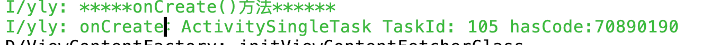
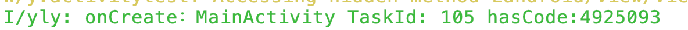
我们看到，指定了相同的taskAffinity的SingleTaskActivity和MainActivity被启动到了同一个task中，taskId都为105。
singleInstance-全局唯一模式
该模式具备singleTask模式的所有特性外，与它的区别就是，这种模式下的Activity会单独占用一个Task栈，具有全局唯一性，即整个系统中就这么一个实例，由于栈内复用的特性，后续的请求均不会创建新的Activity实例，除非这个特殊的任务栈被销毁了。以singleInstance模式启动的Activity在整个系统中是单例的，如果在启动这样的Activiyt时，已经存在了一个实例，那么会把它所在的任务调度到前台，重用这个实例。
配置形式：
<activity android:name=".singleinstance.SingleInstanceActivity" android:launchMode="singleInstance" >
ActivitySingleInstance
public class ActivitySingleInstance extends BaseActivity {
@Override
protected void onCreate(@Nullable Bundle savedInstanceState) {
super.onCreate(savedInstanceState);
setContentView(R.layout.activity_singleinstance);
}
}
配置
<activity
android:name=".ActivitySingleInstance"
android:launchMode="singleInstance">
<intent-filter>
<action android:name="com.yly.demo.singleinstance" />
<category android:name="android.intent.category.DEFAULT" />
</intent-filter>
</activity>
使用下面的方式分别在两个应用中启动它
Intent intent = new Intent();
intent.setAction("com.yly.demo.singleinstance");
startActivity(intent);
查看日志
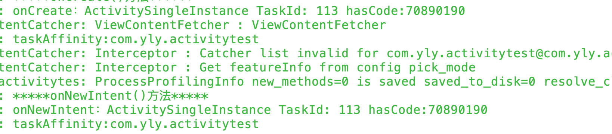
我们看到，第一个应用启动SingleInstanceActivity时，由于系统中不存在该实例，所以新建了一个Task，按home键后，使用另一个App进入该Activity，由于系统中已经存在了一个实例，不会再创建新的Task，直接复用该实例，并且回调onNewIntent方法。可以从他们的hashcode中可以看出这是同一个实例。因此我们可以理解为：SingleInstance模式启动的Activity在系统中具有全局唯一性。
Activity与Fragment生命周期关系
创建过程
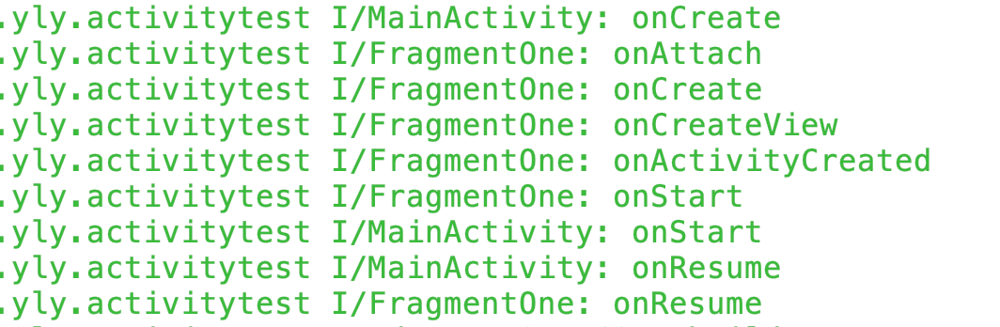
销毁过程
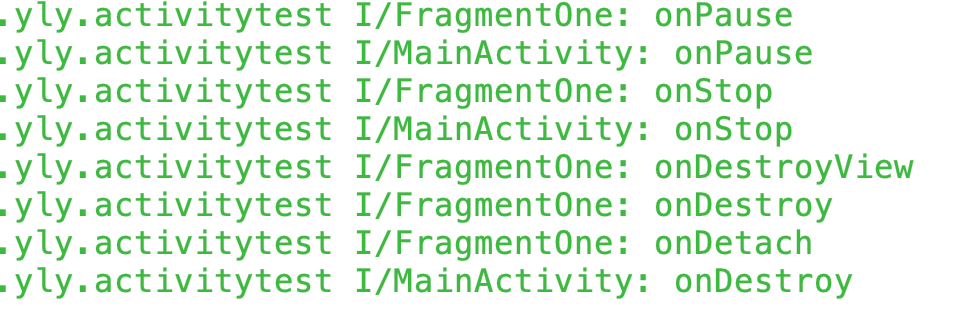